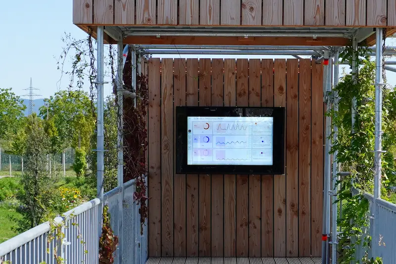
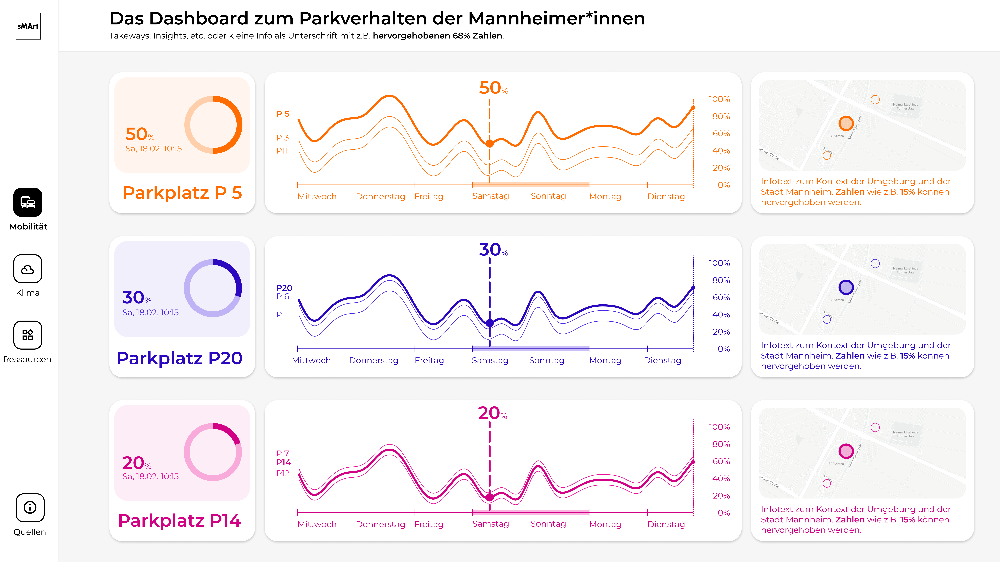
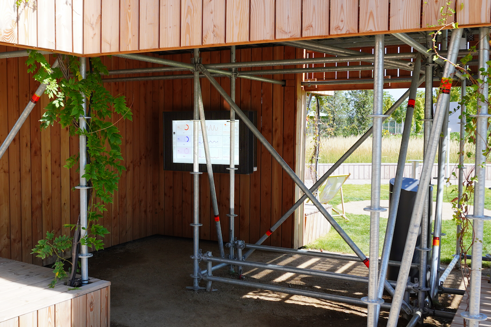

Challenge
Development of interactive visualizations in order to use them for the exploration of new visualization scenarios and for the education of a broad audience.
Solution
sMArt roots is an initiative of the Smart City Lab of Mannheim and the Human Data Interaction Lab (HDIL).
Together they are developing interactive visualizations that support the analysis and communication of urban data.
The target group is the citizens of Mannheim, who can use the visualizations to explore the city from new perspectives.
Output
I was part of the conception and design of dashboards on the topics of mobility transparency and climate resilience,
which were presented in the Smart City Mannheim pavilion as part of the Bundesgartenschau 2023 in Mannheim.
The mobility dashboard displayed data on parking behavior in Mannheim.
Visitors were able to compare clusters of parking garages with different usage scenarios.

sMArt roots is an initiative of the Smart City Lab of Mannheim and the Human Data Interaction Lab (HDIL). Together they are developing interactive visualizations that support the analysis and communication of urban data. The target group is the citizens of Mannheim, who can use the visualizations to explore the city from new perspectives. I was part of the conception and design of dashboards on the topics of mobility transparency and climate resilience, which were presented in the Smart City Mannheim pavilion as part of the Bundesgartenschau 2023 in Mannheim.